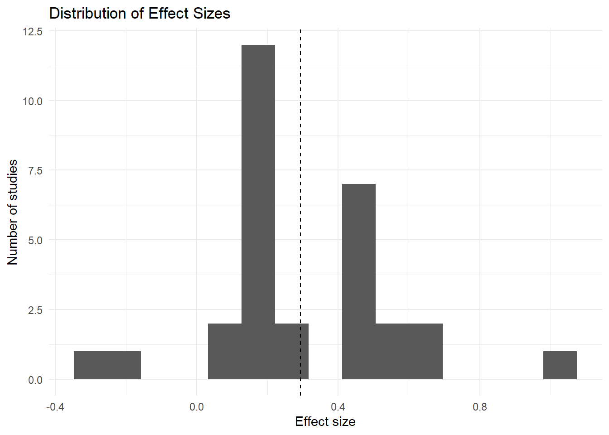
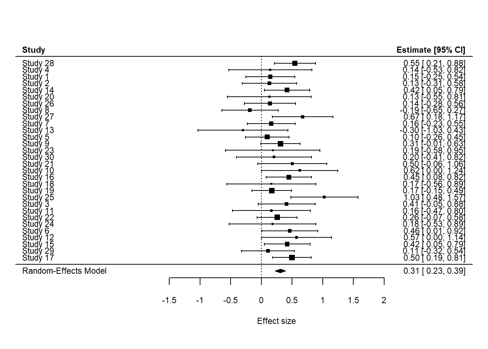
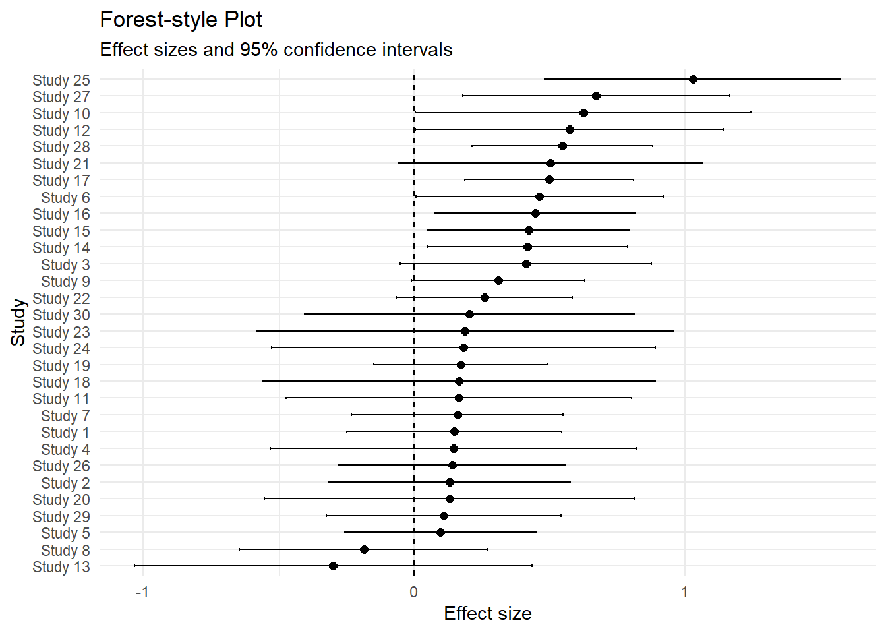
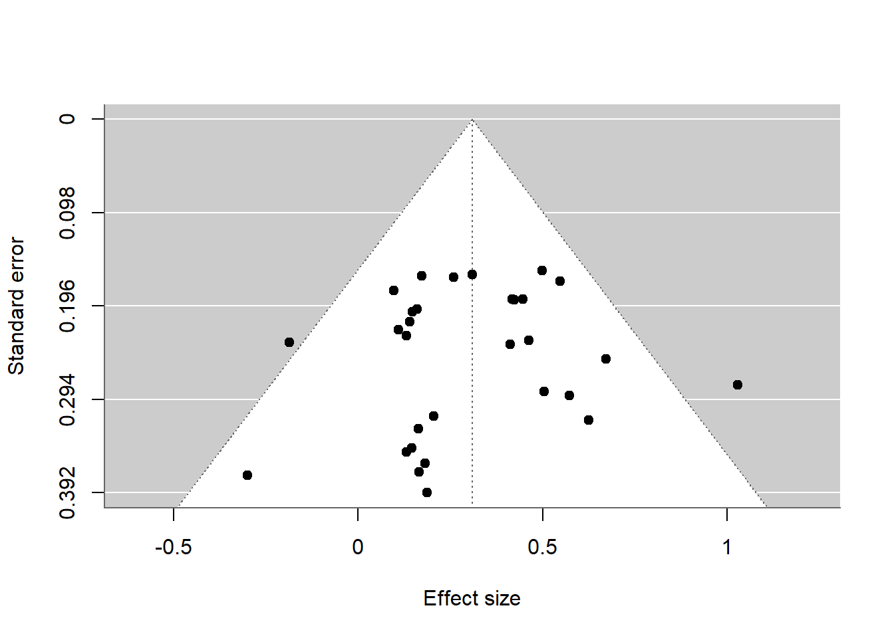
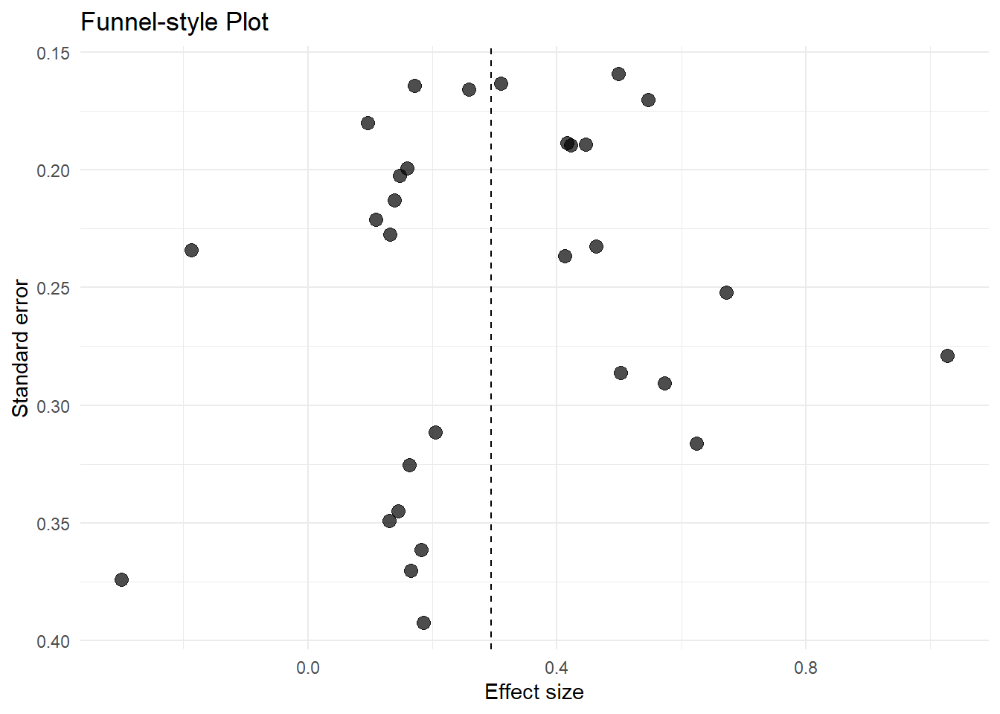
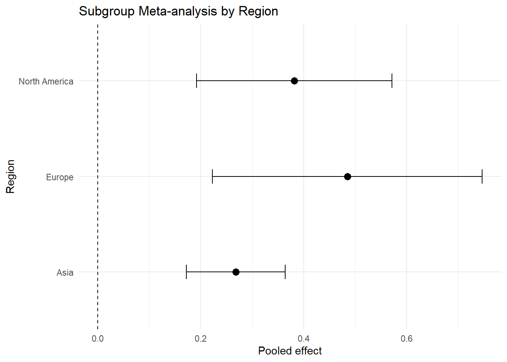
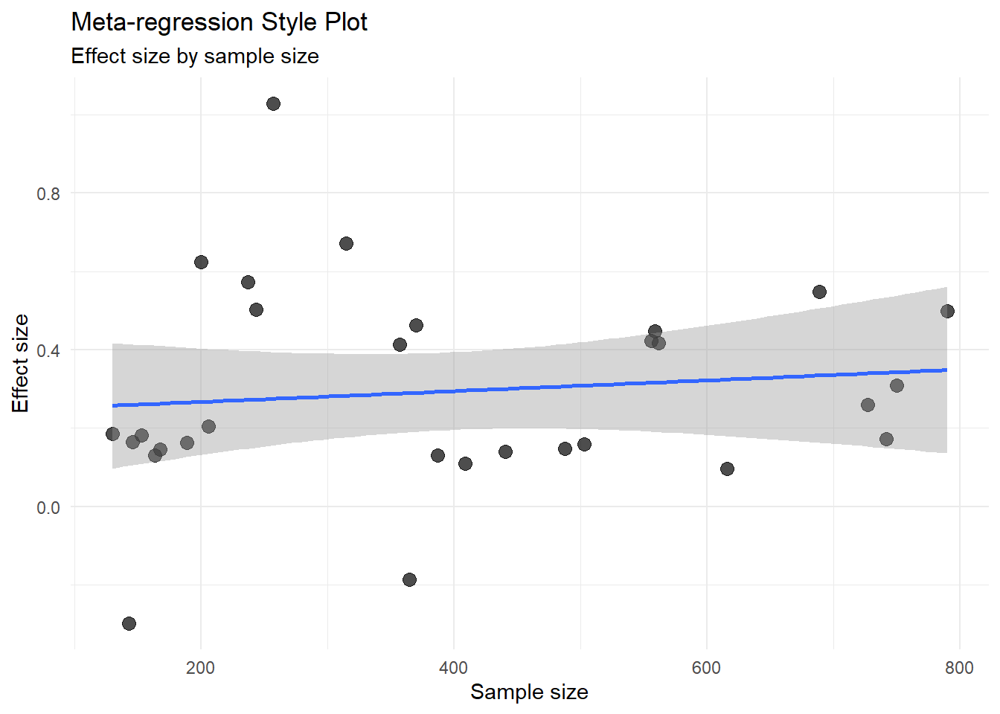

flowchart TD A[Research Question] --> B[Systematic Search] B --> C[Study Screening] C --> D[Effect Size Extraction] D --> E[Fixed or Random Effects] E --> F[Pooled Effect] F --> G[Heterogeneity Assessment] G --> H[Forest Plot] H --> I[Publication Bias Check] I --> J[Reporting]
Advanced 11. Phân tích Tổng hợp
Meta-analysis with R
Tổng quan bài học
TipKết quả học tập (Learning Outcomes)
Sau khi hoàn thành bài học này, học viên có thể:
- Hiểu phân tích tổng hợp (Meta-analysis)
- Hiểu kích thước ảnh hưởng (Effect Size)
- Phân biệt fixed-effect model và random-effects model
- Tính và diễn giải pooled effect
- Hiểu dị biệt nghiên cứu (Heterogeneity)
- Đọc các chỉ số Q, tau-squared và I-squared
- Tạo forest plot
- Tạo funnel plot
- Hiểu publication bias ở mức nhập môn
- Thực hiện subgroup analysis
- Thực hiện meta-regression cơ bản
- Viết kết quả meta-analysis theo chuẩn học thuật
NoteLogic bài học (Module Logic)
Bài học này trả lời câu hỏi:
Khi có nhiều nghiên cứu cùng kiểm tra một vấn đề, làm thế nào để tổng hợp bằng chứng định lượng một cách có hệ thống?
Quy trình:
Research Question
↓
Study Selection
↓
Effect Size Extraction
↓
Meta-analysis Model
↓
Heterogeneity
↓
Forest Plot
↓
Publication Bias
↓
Subgroup / Meta-regression
↓
Academic ReportingQuy trình meta-analysis
1. Meta-analysis là gì?
NoteKiến thức nền tảng (Knowledge Notes)
Là gì? (What?)
Phân tích tổng hợp (Meta-analysis) là phương pháp thống kê dùng để tổng hợp kết quả định lượng từ nhiều nghiên cứu độc lập.
Tại sao cần? (Why?)
Một nghiên cứu riêng lẻ có thể có:
- Cỡ mẫu nhỏ
- Kết quả không ổn định
- Bối cảnh riêng
- Sai số ngẫu nhiên
- Kết luận khác với nghiên cứu khác
Meta-analysis giúp ước lượng hiệu ứng tổng hợp (pooled effect) và đánh giá mức độ nhất quán giữa các nghiên cứu.
Khi nào dùng? (When?)
Dùng khi:
- Có nhiều nghiên cứu cùng câu hỏi
- Các nghiên cứu báo cáo effect size hoặc đủ dữ liệu để tính effect size
- Cần tổng hợp bằng chứng định lượng
- Cần đánh giá heterogeneity
- Cần kiểm tra publication bias
Thực hiện thế nào? (How?)
Trong R có thể dùng:
metafor
metaTrong module này, ta ưu tiên metafor vì linh hoạt và phù hợp cho học thuật.
ImportantỨng dụng trong nghiên cứu (Research Application)
Meta-analysis thường dùng trong:
- Giáo dục
- Quản trị
- Marketing
- Tâm lý học
- Y tế công cộng
- Nông nghiệp
- Công nghệ giáo dục
- Hành vi người tiêu dùng
- Adoption studies
WarningSai lầm thường gặp (Common Mistakes)
Người học thường mắc lỗi:
- Gộp các nghiên cứu quá khác nhau
- Không kiểm tra heterogeneity
- Không báo cáo mô hình fixed hay random
- Không giải thích effect size
- Không kiểm tra publication bias
- Nhầm systematic review với meta-analysis
- Diễn giải pooled effect như kết quả tuyệt đối cho mọi bối cảnh
2. Chuẩn bị dữ liệu
NoteKiến thức nền tảng (Knowledge Notes)
Module này dùng dữ liệu mô phỏng public để đảm bảo render ổn định.
Dữ liệu gồm:
study_id: tên nghiên cứueffect_size: kích thước ảnh hưởngstandard_error: sai số chuẩnsample_size: cỡ mẫuregion: nhóm nghiên cứuyear: năm công bốmethod_quality: chất lượng phương pháp
Cài đặt package
install.packages("tidyverse")
install.packages("metafor")
install.packages("gt")
install.packages("patchwork")
install.packages("scales")Nạp package
library(tidyverse)
library(gt)
library(patchwork)
library(scales)Nạp metafor nếu có
has_metafor <- requireNamespace("metafor", quietly = TRUE)
has_metafor[1] TRUETạo dữ liệu meta-analysis mô phỏng
set.seed(123)
meta_data <- tibble(
study_id = paste0("Study ", 1:30),
year = sample(2015:2026, 30, replace = TRUE),
region = sample(
c("Asia", "Europe", "North America"),
30,
replace = TRUE,
prob = c(0.45, 0.30, 0.25)
),
method_quality = sample(
c("High", "Moderate", "Low"),
30,
replace = TRUE,
prob = c(0.35, 0.45, 0.20)
),
sample_size = sample(80:800, 30, replace = TRUE),
true_effect = rnorm(30, mean = 0.35, sd = 0.12)
) |>
mutate(
standard_error = 1 / sqrt(sample_size / 20),
effect_size = rnorm(
n(),
mean = true_effect,
sd = standard_error
),
variance = standard_error^2
) |>
arrange(year)
glimpse(meta_data)Rows: 30
Columns: 9
$ study_id <chr> "Study 28", "Study 4", "Study 1", "Study 2", "Study 14"…
$ year <int> 2015, 2016, 2017, 2017, 2017, 2017, 2017, 2018, 2018, 2…
$ region <chr> "Asia", "Asia", "Asia", "Asia", "Asia", "North America"…
$ method_quality <chr> "Moderate", "High", "High", "Moderate", "High", "Low", …
$ sample_size <int> 689, 168, 488, 387, 562, 164, 441, 365, 315, 503, 143, …
$ true_effect <dbl> 0.53391328, 0.26489591, 0.29107626, 0.07289973, 0.42732…
$ standard_error <dbl> 0.1703748, 0.3450328, 0.2024441, 0.2273314, 0.1886457, …
$ effect_size <dbl> 0.5471958, 0.1449823, 0.1472587, 0.1312975, 0.4168437, …
$ variance <dbl> 0.02902758, 0.11904762, 0.04098361, 0.05167959, 0.03558…Bảng dữ liệu
meta_data |>
select(study_id, year, region, method_quality, sample_size, effect_size, standard_error) |>
head(10) |>
gt() |>
tab_header(
title = "Example Meta-analysis Dataset",
subtitle = "Simulated public data"
) |>
fmt_number(
columns = c(effect_size, standard_error),
decimals = 3
)| Example Meta-analysis Dataset | ||||||
| Simulated public data | ||||||
| study_id | year | region | method_quality | sample_size | effect_size | standard_error |
|---|---|---|---|---|---|---|
| Study 28 | 2015 | Asia | Moderate | 689 | 0.547 | 0.170 |
| Study 4 | 2016 | Asia | High | 168 | 0.145 | 0.345 |
| Study 1 | 2017 | Asia | High | 488 | 0.147 | 0.202 |
| Study 2 | 2017 | Asia | Moderate | 387 | 0.131 | 0.227 |
| Study 14 | 2017 | Asia | High | 562 | 0.417 | 0.189 |
| Study 20 | 2017 | North America | Low | 164 | 0.130 | 0.349 |
| Study 26 | 2017 | Asia | High | 441 | 0.139 | 0.213 |
| Study 8 | 2018 | Asia | Moderate | 365 | −0.187 | 0.234 |
| Study 27 | 2018 | North America | Moderate | 315 | 0.672 | 0.252 |
| Study 7 | 2019 | Asia | High | 503 | 0.159 | 0.199 |
3. Effect size là gì?
TipKết quả học tập (Learning Outcomes)
Sau phần này, học viên có thể:
- Hiểu effect size
- Phân biệt effect size và p-value
- Biết một số loại effect size phổ biến
- Diễn giải effect size cẩn trọng
NoteKiến thức nền tảng (Knowledge Notes)
Effect size là gì?
Kích thước ảnh hưởng (Effect Size) là chỉ số đo độ lớn của một hiệu ứng hoặc mối quan hệ.
Tại sao cần?
p-value cho biết kết quả có ý nghĩa thống kê hay không.
Effect size cho biết hiệu ứng lớn hay nhỏ.
Một số effect size phổ biến
| Loại dữ liệu | Effect size |
|---|---|
| So sánh trung bình | Cohen’s d, Hedges’ g |
| Tương quan | r |
| Outcome nhị phân | Odds Ratio, Risk Ratio |
| Hồi quy | Standardized beta |
| Tỷ lệ | Proportion, log odds |
Phân phối effect size
ggplot(meta_data, aes(x = effect_size)) +
geom_histogram(bins = 15) +
geom_vline(xintercept = mean(meta_data$effect_size), linetype = "dashed") +
labs(
title = "Distribution of Effect Sizes",
x = "Effect size",
y = "Number of studies"
) +
theme_minimal()
WarningSai lầm thường gặp (Common Mistakes)
Không nên chỉ tổng hợp p-values.
Meta-analysis thường cần effect size và variance hoặc standard error.
4. Fixed-effect và random-effects model
TipKết quả học tập (Learning Outcomes)
Sau phần này, học viên có thể:
- Phân biệt fixed-effect model và random-effects model
- Biết khi nào dùng từng mô hình
- Hiểu vì sao random-effects thường phù hợp trong khoa học xã hội
NoteKiến thức nền tảng (Knowledge Notes)
Fixed-effect model là gì?
Fixed-effect model giả định tất cả nghiên cứu ước lượng cùng một effect thật.
Random-effects model là gì?
Random-effects model giả định effect thật có thể khác nhau giữa các nghiên cứu do khác bối cảnh, mẫu, phương pháp hoặc thời gian.
So sánh
| Nội dung | Fixed-effect | Random-effects |
|---|---|---|
| Giả định | Một effect thật | Nhiều effect thật |
| Heterogeneity | Không nhấn mạnh | Có xem xét |
| Trọng số | Chủ yếu theo SE | Theo SE và tau² |
| Phù hợp | Nghiên cứu rất đồng nhất | Nghiên cứu đa bối cảnh |
Chạy meta-analysis bằng metafor
if (has_metafor) {
fixed_model <- metafor::rma(
yi = effect_size,
vi = variance,
data = meta_data,
method = "FE"
)
random_model <- metafor::rma(
yi = effect_size,
vi = variance,
data = meta_data,
method = "REML"
)
fixed_model
random_model
}
Random-Effects Model (k = 30; tau^2 estimator: REML)
tau^2 (estimated amount of total heterogeneity): 0 (SE = 0.0119)
tau (square root of estimated tau^2 value): 0
I^2 (total heterogeneity / total variability): 0.00%
H^2 (total variability / sampling variability): 1.00
Test for Heterogeneity:
Q(df = 29) = 29.9650, p-val = 0.4158
Model Results:
estimate se zval pval ci.lb ci.ub
0.3090 0.0411 7.5263 <.0001 0.2286 0.3895 ***
---
Signif. codes: 0 '***' 0.001 '**' 0.01 '*' 0.05 '.' 0.1 ' ' 1Trích xuất kết quả
if (has_metafor) {
model_summary <- tibble(
model = c("Fixed-effect", "Random-effects"),
pooled_effect = c(
as.numeric(fixed_model$b),
as.numeric(random_model$b)
),
se = c(
fixed_model$se,
random_model$se
),
ci_lower = c(
fixed_model$ci.lb,
random_model$ci.lb
),
ci_upper = c(
fixed_model$ci.ub,
random_model$ci.ub
)
)
model_summary
}Bảng model summary
if (has_metafor) {
model_summary |>
gt() |>
tab_header(
title = "Fixed-effect and Random-effects Models"
) |>
fmt_number(
columns = c(pooled_effect, se, ci_lower, ci_upper),
decimals = 3
)
}| Fixed-effect and Random-effects Models | ||||
| model | pooled_effect | se | ci_lower | ci_upper |
|---|---|---|---|---|
| Fixed-effect | 0.309 | 0.041 | 0.229 | 0.390 |
| Random-effects | 0.309 | 0.041 | 0.229 | 0.390 |
ImportantDiễn giải kết quả (Interpretation)
Nếu các nghiên cứu khác nhau về bối cảnh, phương pháp hoặc mẫu, random-effects model thường hợp lý hơn.
Tuy nhiên, lựa chọn mô hình cần dựa trên lý thuyết và đặc điểm bộ nghiên cứu, không chỉ dựa vào thói quen.
5. Heterogeneity
TipKết quả học tập (Learning Outcomes)
Sau phần này, học viên có thể:
- Hiểu heterogeneity
- Đọc Q statistic
- Đọc tau-squared
- Đọc I-squared
- Biết khi nào cần subgroup analysis hoặc meta-regression
NoteKiến thức nền tảng (Knowledge Notes)
Heterogeneity là gì?
Heterogeneity là mức độ khác biệt giữa các effect sizes vượt quá sai số ngẫu nhiên.
Chỉ số thường dùng
| Chỉ số | Ý nghĩa |
|---|---|
| Q | Kiểm định heterogeneity |
| tau² | Phương sai effect thật giữa nghiên cứu |
| I² | Tỷ lệ biến thiên do heterogeneity |
Quy tắc I² tham khảo
| I² | Diễn giải |
|---|---|
| 25% | Thấp |
| 50% | Trung bình |
| 75% | Cao |
Trích xuất heterogeneity
if (has_metafor) {
heterogeneity_table <- tibble(
statistic = c("Q", "Q p-value", "tau-squared", "I-squared"),
value = c(
random_model$QE,
random_model$QEp,
random_model$tau2,
random_model$I2
)
)
heterogeneity_table
}Bảng heterogeneity
if (has_metafor) {
heterogeneity_table |>
gt() |>
tab_header(
title = "Heterogeneity Statistics"
) |>
fmt_number(
columns = value,
decimals = 3
)
}| Heterogeneity Statistics | |
| statistic | value |
|---|---|
| Q | 29.965 |
| Q p-value | 0.416 |
| tau-squared | 0.000 |
| I-squared | 0.000 |
WarningSai lầm thường gặp (Common Mistakes)
Không nên bỏ qua heterogeneity.
Nếu I² cao, cần hỏi:
- Nghiên cứu khác nhau ở đâu?
- Có biến moderator không?
- Có cần subgroup analysis không?
- Có nên diễn giải pooled effect thận trọng hơn không?
6. Forest plot
TipKết quả học tập (Learning Outcomes)
Sau phần này, học viên có thể:
- Hiểu forest plot
- Biết cách đọc confidence interval của từng nghiên cứu
- Biết cách đọc pooled effect
- Tạo forest plot bằng
metafor - Tạo forest-style plot bằng
ggplot2
NoteKiến thức nền tảng (Knowledge Notes)
Forest plot là biểu đồ trung tâm trong meta-analysis.
Nó thể hiện:
- Effect size từng nghiên cứu
- Confidence interval từng nghiên cứu
- Pooled effect
- Mức độ nhất quán giữa các nghiên cứu
Forest plot bằng metafor
if (has_metafor) {
metafor::forest(
random_model,
slab = meta_data$study_id,
xlab = "Effect size"
)
}
Forest-style plot bằng ggplot2
forest_data <- meta_data |>
mutate(
ci_lower = effect_size - 1.96 * standard_error,
ci_upper = effect_size + 1.96 * standard_error
)
ggplot(
forest_data,
aes(
x = effect_size,
y = reorder(study_id, effect_size)
)
) +
geom_point(size = 2) +
geom_errorbarh(
aes(xmin = ci_lower, xmax = ci_upper),
height = 0.15
) +
geom_vline(xintercept = 0, linetype = "dashed") +
labs(
title = "Forest-style Plot",
subtitle = "Effect sizes and 95% confidence intervals",
x = "Effect size",
y = "Study"
) +
theme_minimal()
ImportantDiễn giải kết quả (Interpretation)
Nếu confidence interval của một nghiên cứu cắt qua 0, nghiên cứu đó không cho thấy hiệu ứng rõ ràng ở mức riêng lẻ.
Nếu pooled effect không cắt qua 0, tổng hợp bằng chứng có thể gợi ý hiệu ứng khác 0.
7. Funnel plot và publication bias
TipKết quả học tập (Learning Outcomes)
Sau phần này, học viên có thể:
- Hiểu funnel plot
- Biết publication bias là gì
- Tạo funnel plot
- Diễn giải funnel plot thận trọng
NoteKiến thức nền tảng (Knowledge Notes)
Publication bias là gì?
Publication bias xảy ra khi các nghiên cứu có kết quả có ý nghĩa thống kê dễ được công bố hơn nghiên cứu không có ý nghĩa.
Funnel plot là gì?
Funnel plot vẽ effect size theo standard error hoặc precision.
Nếu không có bias và heterogeneity thấp, hình thường tương đối đối xứng.
Funnel plot bằng metafor
if (has_metafor) {
metafor::funnel(
random_model,
xlab = "Effect size",
ylab = "Standard error"
)
}
Funnel-style plot bằng ggplot2
ggplot(meta_data, aes(x = effect_size, y = standard_error)) +
geom_point(size = 3, alpha = 0.7) +
scale_y_reverse() +
geom_vline(xintercept = mean(meta_data$effect_size), linetype = "dashed") +
labs(
title = "Funnel-style Plot",
x = "Effect size",
y = "Standard error"
) +
theme_minimal()
WarningSai lầm thường gặp (Common Mistakes)
Không nên kết luận publication bias chỉ từ mắt thường nhìn funnel plot.
Funnel plot bất đối xứng có thể do:
- Publication bias
- Heterogeneity
- Small-study effects
- Method differences
- Chance
8. Egger’s test
TipKết quả học tập (Learning Outcomes)
Sau phần này, học viên có thể:
- Hiểu Egger’s test ở mức nhập môn
- Biết kiểm tra funnel plot asymmetry
- Diễn giải kết quả thận trọng
Egger’s test
if (has_metafor) {
egger_test <- metafor::regtest(
random_model,
model = "rma"
)
egger_test
}
Regression Test for Funnel Plot Asymmetry
Model: mixed-effects meta-regression model
Predictor: standard error
Test for Funnel Plot Asymmetry: z = -0.5070, p = 0.6122
Limit Estimate (as sei -> 0): b = 0.3849 (CI: 0.0797, 0.6902)
ImportantDiễn giải kết quả (Interpretation)
Nếu Egger’s test có p-value nhỏ, có thể có dấu hiệu funnel plot asymmetry.
Tuy nhiên, không nên xem đây là bằng chứng tuyệt đối về publication bias.
9. Subgroup analysis
TipKết quả học tập (Learning Outcomes)
Sau phần này, học viên có thể:
- Hiểu subgroup analysis
- So sánh effect size giữa nhóm nghiên cứu
- Biết khi nào subgroup analysis hợp lý
- Trực quan hóa subgroup effects
NoteKiến thức nền tảng (Knowledge Notes)
Subgroup analysis kiểm tra liệu pooled effect có khác nhau giữa các nhóm hay không.
Ví dụ:
- Region
- Method quality
- Population
- Measurement type
- Study design
Tính effect trung bình theo region
subgroup_summary <- meta_data |>
group_by(region) |>
summarise(
k = n(),
mean_effect = mean(effect_size),
mean_se = mean(standard_error),
.groups = "drop"
)
subgroup_summaryRandom-effects model theo region
if (has_metafor) {
subgroup_models <- meta_data |>
group_by(region) |>
group_modify(
~ {
model <- metafor::rma(
yi = effect_size,
vi = variance,
data = .x,
method = "REML"
)
tibble(
pooled_effect = as.numeric(model$b),
ci_lower = model$ci.lb,
ci_upper = model$ci.ub,
i_squared = model$I2
)
}
) |>
ungroup()
subgroup_models
}Biểu đồ subgroup
if (exists("subgroup_models")) {
ggplot(
subgroup_models,
aes(x = pooled_effect, y = region)
) +
geom_point(size = 3) +
geom_errorbarh(
aes(xmin = ci_lower, xmax = ci_upper),
height = 0.15
) +
geom_vline(xintercept = 0, linetype = "dashed") +
labs(
title = "Subgroup Meta-analysis by Region",
x = "Pooled effect",
y = "Region"
) +
theme_minimal()
}
WarningSai lầm thường gặp (Common Mistakes)
Không nên chạy quá nhiều subgroup analyses nếu không có lý thuyết.
Subgroup analysis dễ tạo kết quả giả nếu thử quá nhiều nhóm.
10. Meta-regression
TipKết quả học tập (Learning Outcomes)
Sau phần này, học viên có thể:
- Hiểu meta-regression
- Biết khi nào dùng moderator liên tục
- Chạy meta-regression cơ bản
- Diễn giải hệ số meta-regression
NoteKiến thức nền tảng (Knowledge Notes)
Meta-regression kiểm tra liệu effect size khác nhau theo đặc điểm nghiên cứu hay không.
Ví dụ:
Effect size có thay đổi theo year hoặc sample_size không?Meta-regression với sample size và year
if (has_metafor) {
meta_reg_model <- metafor::rma(
yi = effect_size,
vi = variance,
mods = ~ sample_size + year,
data = meta_data,
method = "REML"
)
meta_reg_model
}
Mixed-Effects Model (k = 30; tau^2 estimator: REML)
tau^2 (estimated amount of residual heterogeneity): 0.0033 (SE = 0.0137)
tau (square root of estimated tau^2 value): 0.0572
I^2 (residual heterogeneity / unaccounted variability): 5.92%
H^2 (unaccounted variability / sampling variability): 1.06
R^2 (amount of heterogeneity accounted for): 0.00%
Test for Residual Heterogeneity:
QE(df = 27) = 28.3589, p-val = 0.3927
Test of Moderators (coefficients 2:3):
QM(df = 2) = 1.5752, p-val = 0.4549
Model Results:
estimate se zval pval ci.lb ci.ub
intrcpt -30.0743 25.5090 -1.1790 0.2384 -80.0710 19.9224
sample_size 0.0001 0.0002 0.2994 0.7646 -0.0004 0.0005
year 0.0150 0.0126 1.1894 0.2343 -0.0097 0.0398
---
Signif. codes: 0 '***' 0.001 '**' 0.01 '*' 0.05 '.' 0.1 ' ' 1Meta-regression plot
ggplot(meta_data, aes(x = sample_size, y = effect_size)) +
geom_point(size = 3, alpha = 0.7) +
geom_smooth(method = "lm", se = TRUE) +
labs(
title = "Meta-regression Style Plot",
subtitle = "Effect size by sample size",
x = "Sample size",
y = "Effect size"
) +
theme_minimal()
ImportantDiễn giải kết quả (Interpretation)
Nếu hệ số của moderator có ý nghĩa, điều đó gợi ý effect size có thể thay đổi theo đặc điểm nghiên cứu.
Tuy nhiên, meta-regression thường có số nghiên cứu nhỏ, nên cần diễn giải rất thận trọng.
11. Sensitivity analysis
TipKết quả học tập (Learning Outcomes)
Sau phần này, học viên có thể:
- Hiểu sensitivity analysis
- Kiểm tra ảnh hưởng của nghiên cứu chất lượng thấp
- So sánh kết quả trước và sau khi loại nhóm nghiên cứu
NoteKiến thức nền tảng (Knowledge Notes)
Sensitivity analysis kiểm tra liệu kết luận có ổn định khi thay đổi một số quyết định phân tích hay không.
Ví dụ:
- Loại studies chất lượng thấp
- Loại outlier effect sizes
- Dùng mô hình khác
- Thay đổi effect size metric
Loại studies chất lượng thấp
meta_data_high_moderate <- meta_data |>
filter(method_quality != "Low")Chạy lại model
if (has_metafor) {
sensitivity_model <- metafor::rma(
yi = effect_size,
vi = variance,
data = meta_data_high_moderate,
method = "REML"
)
sensitivity_result <- tibble(
model = c("Original", "Excluding low quality studies"),
pooled_effect = c(
as.numeric(random_model$b),
as.numeric(sensitivity_model$b)
),
ci_lower = c(
random_model$ci.lb,
sensitivity_model$ci.lb
),
ci_upper = c(
random_model$ci.ub,
sensitivity_model$ci.ub
)
)
sensitivity_result
}Bảng sensitivity
if (exists("sensitivity_result")) {
sensitivity_result |>
gt() |>
tab_header(
title = "Sensitivity Analysis"
) |>
fmt_number(
columns = c(pooled_effect, ci_lower, ci_upper),
decimals = 3
)
}| Sensitivity Analysis | |||
| model | pooled_effect | ci_lower | ci_upper |
|---|---|---|---|
| Original | 0.309 | 0.229 | 0.390 |
| Excluding low quality studies | 0.316 | 0.230 | 0.403 |
Kết quả mạnh hơn nếu pooled effect ổn định qua nhiều sensitivity analyses hợp lý.
12. Viết kết quả học thuật
NoteKiến thức nền tảng (Knowledge Notes)
Khi viết meta-analysis, cần báo cáo:
- Số nghiên cứu
- Tổng sample size nếu phù hợp
- Effect size metric
- Model fixed/random
- Pooled effect
- Confidence interval
- Heterogeneity
- Publication bias
- Subgroup hoặc meta-regression nếu có
Template pooled effect
A random-effects meta-analysis was conducted across [k] studies. The pooled effect size was [estimate], 95% CI [lower, upper], indicating [interpretation].Template heterogeneity
Heterogeneity across studies was [low/moderate/high], as indicated by I² = [value]%. This suggests that effect sizes varied across study contexts.Template forest plot
The forest plot shows that most studies reported positive effects, although confidence intervals varied across studies.Template publication bias
Visual inspection of the funnel plot suggested [symmetry/asymmetry]. However, this result should be interpreted cautiously because funnel plot asymmetry may reflect heterogeneity as well as publication bias.Template meta-regression
Meta-regression was conducted to examine whether study-level characteristics explained variation in effect sizes. The results suggested that [moderator] was [associated/not associated] with effect size variation.
WarningSai lầm thường gặp (Common Mistakes)
Không nên viết:
Meta-analysis proved that the intervention works in all contexts.Nên viết:
The pooled evidence suggests a positive average effect, although heterogeneity indicates that effects may vary across contexts.13. Bài tập thực hành
ImportantBài tập thực hành (Practice Exercise)
Hãy thực hiện:
- Tạo hoặc nhập dữ liệu gồm ít nhất 15 studies.
- Kiểm tra effect size và standard error.
- Chạy fixed-effect model.
- Chạy random-effects model.
- So sánh pooled effect.
- Trích xuất I².
- Tạo forest plot.
- Tạo funnel plot.
- Chạy subgroup analysis.
- Chạy meta-regression.
- Viết đoạn kết quả meta-analysis.
14. Thử thách
WarningThử thách (Challenge)
Tình huống
Bạn tổng hợp 25 nghiên cứu về hiệu quả của một phương pháp dạy học.
Kết quả random-effects model:
Pooled effect = 0.38
95% CI = [0.20, 0.56]
I² = 72%Câu hỏi
- Kết quả pooled effect nên diễn giải thế nào?
- I² = 72% có ý nghĩa gì?
- Có nên chỉ báo cáo pooled effect không?
- Cần kiểm tra thêm gì?
- Có nên làm subgroup analysis không?
TipGợi ý trả lời (Suggested Solution)
Một câu trả lời tốt nên nêu:
- Pooled effect dương và CI không cắt 0.
- I² = 72% cho thấy heterogeneity cao.
- Không nên chỉ báo cáo pooled effect.
- Cần kiểm tra forest plot, funnel plot, sensitivity analysis.
- Subgroup analysis hoặc meta-regression có thể cần nếu có lý thuyết hoặc moderator hợp lý.
15. Dự án nhỏ
ImportantDự án nhỏ (Mini Project)
Chủ đề
Meta-analysis Report
Sản phẩm đầu ra
Học viên cần tạo:
Meta_Analysis_Report.htmlNội dung báo cáo
- Research question
- Study inclusion criteria
- Effect size metric
- Dataset description
- Fixed-effect model
- Random-effects model
- Heterogeneity
- Forest plot
- Funnel plot
- Subgroup analysis
- Meta-regression
- Sensitivity analysis
- Academic interpretation
16. Điểm cần ghi nhớ
- Meta-analysis tổng hợp effect sizes từ nhiều nghiên cứu.
- Effect size quan trọng hơn việc chỉ gộp p-values.
- Fixed-effect giả định một effect thật; random-effects cho phép effect khác nhau giữa nghiên cứu.
- Heterogeneity cần được báo cáo.
- I² cao cho thấy effect sizes khác nhau đáng kể giữa nghiên cứu.
- Forest plot là hình trung tâm của meta-analysis.
- Funnel plot giúp kiểm tra khả năng publication bias nhưng cần diễn giải thận trọng.
- Subgroup analysis và meta-regression cần cơ sở lý thuyết.
- Kết quả meta-analysis không tự động áp dụng cho mọi bối cảnh.
17. Bước tiếp theo
NoteBước tiếp theo (What Next?)
Sau khi hoàn thành phần này, học viên nên:
- Biết cấu trúc dữ liệu meta-analysis.
- Biết chạy fixed-effect và random-effects model.
- Biết đọc heterogeneity.
- Biết tạo forest plot và funnel plot.
- Biết viết kết quả meta-analysis.
- Chuyển sang:
Trong phần tiếp theo, chúng ta sẽ học phân tích thư mục khoa học bằng R và bibliometrix.